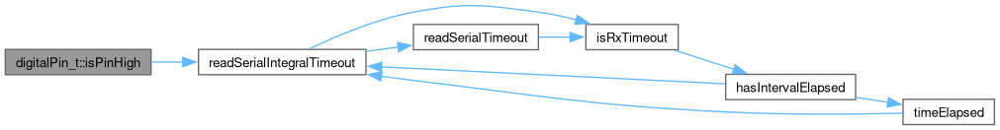
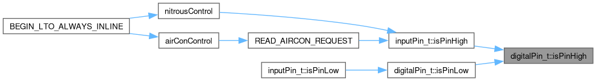
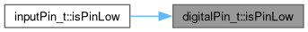
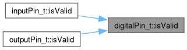
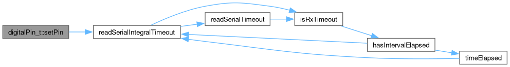
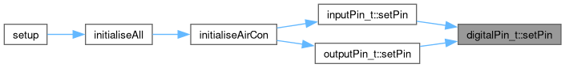
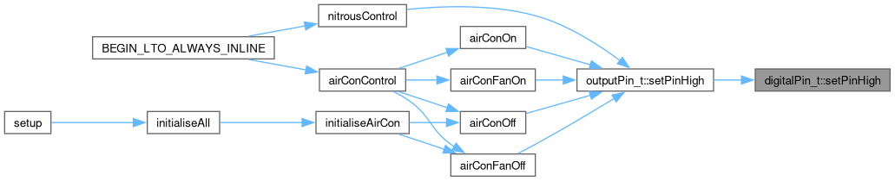
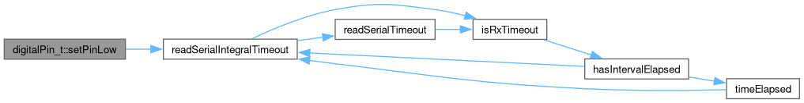

|
Speeduino
|
Loading...
Searching...
No Matches
|
Speeduino
|
A class for input pin operations. More...
#include <digitalPin.h>
Public Member Functions | |
| void | setPin (uint8_t pin, uint8_t mode) noexcept |
| Set the input pin. | |
| bool | isValid (void) const |
| Is the pin set? | |
| bool | isPinHigh (void) const noexcept |
| Check if the pin is set high. | |
| bool | isPinLow (void) const noexcept |
| Check if the pin is set low. | |
| void | setPinHigh (void) noexcept |
| Set the pin high. | |
| void | setPinLow (void) noexcept |
| Set the pin low. | |
A class for input pin operations.
Call setPin() to initialize the pin, then call isPinHigh() to check if the pin is set high.
Check if the pin is set high.


Check if the pin is set low.

Is the pin set?

Set the input pin.


Set the pin high.

Set the pin low.
